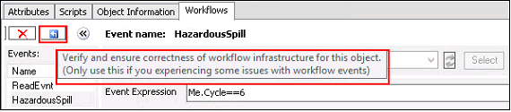
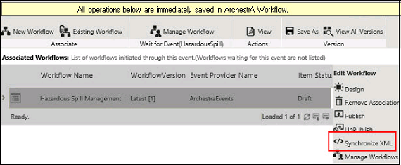

No
Relative references are especially useful in templates while passing context parameters to workflows. You can use relative references like MyContainer, MyPlatform, MyEngine, MyArea, and Me to refer to contained objects within that container.
Relative referencing supports event context at the parameter level and the attribute read or write at the AttributeReadWrite activity level.
The following valid relative references refer to the current object:
When you use relative references, like MyContainer, you can refer to contained objects within that container. For example, a reference to MyContainer.InletValve.PV is equivalent to Tank1.InletValve.PV in the following hierarchy:
Example:
If System Platform-Workflow Connector Version 1.1.1222.0 is used and events to trigger workflows are configured, then do the following steps to use the relative referencing support in the System Platform-Workflow Connector Version 1.5.1229 for the existing events:

